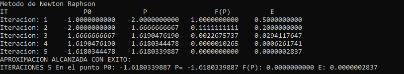

El método de Newton-Raphson es llamado así por el matemático inglés Joseph Raphson (contemporáneo de Newton) se hizo miembro de la Royal Society en 1691 por su libro Aequationum Universalis, publicado en 1690, que contenía este método para aproximar raíces. Newton en su libro Método de las fluxiones describe el mismo método, en 1671, pero no fue publicado hasta 1736, lo que significa que Raphson había publicado este resultado 46 años antes. Aunque no fue tan popular como los trabajos de Newton, se le reconoció posteriormente.
El método de Newton Raphson es un procedimiento algorítmico que permite hallar raíces de funciones, conocido un valor numérico cercano a la raíz. Es un método abierto e iterativo, en general de rápida convergencia, muy útil para el cálculo de raíces cuadradas y de mayor grado, aunque para algunos casos el método presenta inconvenientes, por ejemplo, si existen raíces múltiples, en este caso se tendría que aplicar diferentes soluciones para así lograr encontrar la raíz sin abandonar el método.
En general, como en todos los métodos numéricos abiertos, el método de Newton-Raphson busca una raíz dada, una función f(x), un valor inicial y un número de iteraciones. Para tener en cuenta, no es necesario tener un intervalo.
Al método se le ingresa:
• Una función F(x)
• un valor inicial
• Una tolerancia
• número "n" de iteraciones
El método usa la siguiente serie:
con el fin de hallar el nuevo valor, el cual se reemplaza en la función y su respectiva derivada El método pide la derivada de la función f(x); esto puede ser un inconveniente ya que la derivada puede ser de un grado de complejidad alto y además si esta tiende a 0 el método se hace cada vez más lento. El método se para cuando la tolerancia es mayor que el error.
ENTRADA:
Aproximación inicial p0; tolerancia TOL; cantidad máxima de iteraciones IT.
SALIDA:
Solución aproximada p o mensaje de fracaso.
HACER i = 1
MIENTRAS i <= IT HACER LOS PASOS 1 AL 5 PASO
1: HACER p = p0 – (f(p0) / f’(p0))
PASO 2: SI |(p – p0)/p| < TOL ENTONCES
PASO 3: SALIDA(p)
PARAR
PASO 4: HACER i = i + 1
PASO 5: HACER p0 = p
FIN MIENTRAS
SALIDA (“El método fracasó o procedimiento terminado sin éxito”)
PARA R
Sea f(x)=-x^3 - cos (x) utilizar el método de Newton-Raphson para encontrar la aproximación a la raíz utilizando un toleracia de 10^-5 y el punto inicial p0= -1. Derivada f'(x)= -3x^2 + sen (x).
como se puede observar en la gráfica elegimos un punto que estaba cerca de la raíz por lo que la respuesta se consigue en 4 iteraciones en el punto P0=-0.8654740331. La respuesta es con 10 decimales.
Sea f(x)= x^2 - 5x + 4 utilizar el método de Newton-Raphson para encontrar la aproximación a la raíz utilizando un toleracia de 10^-5 y el punto inicial p0= 6. Derivada f'(x)= 2x - 5.
En esta ocasión como es una función cuadrática tiene 2 raices, pero como el método solo permite ingresar un punto se tendria que ingresar punto a punto para poder presentar las raices.
Sea f(x)= x^2 + x - 1 utilizar el método de Newton-Raphson para encontrar la aproximación a la raíz utilizando un toleracia de 10^-5 y el punto inicial p0= -1. Derivada f'(x)= 2x + 1.

Este código esta implementado para utilizarlo en visual basic 2017 en el lenguaje de programación C++. Tiene una precisión de 10 decimales.
Encuentre los links para que les sirva de referencia por alguna consulta con el desarrollo del método.